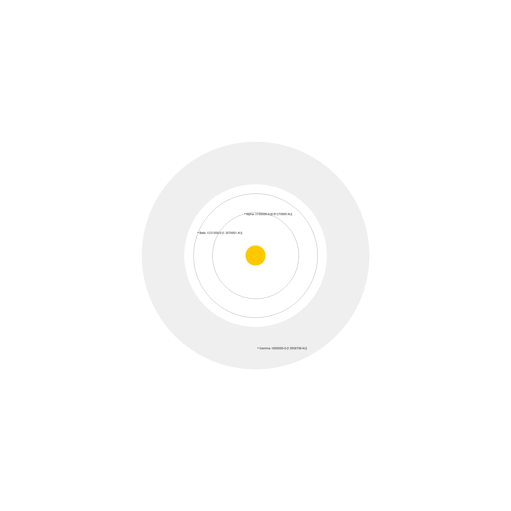
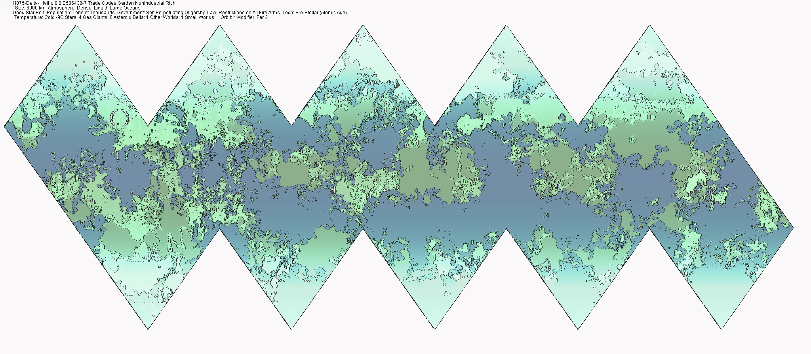

Weaker Super Giant : G5 : 0.8597058 Variable
Stellar Mass 12.0 Sols
Stellar Luminosity 9.49 Sols
Orbits:4
zone 10.593251AU Delta-
N875-Delta- Haihu 0 0 B586436-7
Size: 8000 km Atmosphere: Dense Liquid: Large Oceans
Good Star Port Population: Tens of Thousands Government: Self Perpetuating Oligarchy Law: Restrictions on All Fire Arms Tech: Pre-Stellar (Atomic Age)

Habitable Orbit 10.593251 AU's
N875-Delta- Haihu 0 0 B586436-7
Size: 8000 km Atmosphere: Dense Liquid: Large Oceans
Good Star Port Population: Tens of Thousands Government: Self Perpetuating Oligarchy Law: Restrictions on All Fire Arms Tech: Pre-Stellar (Atomic Age)
Planet Mass 0.21484375 earths
Planet Diameter 8320.0 km
Molten Core Density 0.88 earths
Planet Gravity 0.55 G's
Habitable Orbit 10.593251 AU's
Orbital Eccentricity 0.0037759892 Degrees
Orbital Period 9.952984 Years
Axial Tilt 4.0 Degrees
Rotational Period -23.867203 Hours
Nitrogen Oxygen Mix 8.0 Composition
Liquid Composition Water 58.0 %
Hydrographic Percentage 48.220997 % Surface Liquid
Rare Synthetic Animals value 4.0
Rare Animals value 4.0
Very Rare Synthetic Animals value 6.0
Very Rare Animals value 4.0
Natural Compounds value 4.0
Synthetic Compounds value 4.0
Rare Natural Compounds value 4.0

Surface Preasure 0.9 Atm's
Energy Factor 476.54694 K/s
Energy Emission 1.0 Earths
Magnetic Field 1.3979206 Earths
Energy Absorption 0.52 Percent
Green House Effect 1.08 Earths
Base Temperature 270.1078 K
Base Temperature -3.142212 C
Day Plus 16.534822 C
Night Minus 70.717636 C
Axial Tilt Effect 1.9298246 C
Orbital Eccentricity Effect 0.1038397 C
| Latitude 83 Deg -13.75 C |
|---|
| Latitude 76 Deg -10.16053 C |
| Latitude 69 Deg -6.6324763 C |
| Latitude 62 Deg -3.2262056 C |
| Latitude 55 Deg -8.881784E-16 C |
| Latitude 48 Deg 2.9909394 C |
| Latitude 41 Deg 5.6954365 C |
| Latitude 34 Deg 8.067217 C |
| Latitude 27 Deg 10.065699 C |
| Latitude 20 Deg 11.656687 C |
| Latitude 13 Deg 12.812961 C |
| Latitude 6 Deg 13.514733 C |
Evolution:7 Complex Intelligent Social Life Forms Survival:-1 Impossible To Survive Fossels:10 Simple To Find Fossels Bio Mass:4 Abundance of Animals and Plants
80001 beings
Population data code 4
Rare Weapons value 4.0
Common Vehicles value 4.0
Rare Vehicles value 4.0
Very Rare Vehicles value 5.0
Rare Art value 5.0
Very Rare Art value 4.0
Common Technologies value 3.0
Rare Sofware value 4.0
Very Rare Sofware value 6.0
Natural Recordings value 2.0
Synthetic Recordings value 4.0
Rare Natural Recordings value 5.0
Rare Synthetic Recordings value 5.0
Rare Synthetic Recordings value 5.0
Very Rare Synthetic Recordings value 5.0
Iag City
Population 3000 beings
Poolo City
Population 3000 beings
Eeeqoro City
Population 3000 beings
Iao City
Population 3000 beings
Ghieieiim Town
Population 200 beings
Buce Town
Population 200 beings
Ylaeitoo Town
Population 200 beings
Rpschmi Town
Population 200 beings
Thsoshie Town
Population 200 beings
Uiquwaha Town
Population 200 beings
N875-Delta-ddista Town
Population 200 beings
Ayaks Town
Population 200 beings
Xooush VillagePopulation 10 beings
Hae VillagePopulation 10 beings
Sheewahokdeve VillagePopulation 10 beings
Gibi VillagePopulation 10 beings
Chia VillagePopulation 10 beings
Owah VillagePopulation 10 beings
Nmifae VillagePopulation 10 beings
Yefee VillagePopulation 10 beings
Lo VillagePopulation 10 beings
Cehayjea VillagePopulation 10 beings
Aidteeeab VillagePopulation 10 beings
Aap VillagePopulation 10 beings
Buiboa VillagePopulation 10 beings
Late VillagePopulation 10 beings
Wahii VillagePopulation 10 beings
Pafee VillagePopulation 10 beings
Mptyla VillagePopulation 10 beings
Worlddooah VillagePopulation 10 beings
N875-Delta-a VillagePopulation 10 beings
Port UograCode B
Population 68 visitors
Port EavfiiCode B
Population 52 visitors
Dock KaeneiriCode D
Population 4 visitors
Key YdeddouCode E
Population 8 visitors
Aggresiveness Competitive
Aggresive Action Millitant
Progresiveness Radical
Progresive Action Enterprising
Extensiveness Harmonious
Extensive Action Xenophilic
Secretiveness Communicative
Secretive Action Couscous
Live in communal housing for Children
Widowers must marry for Different races
Quarters must be visited for Scientific figures
Never cut Hair for Human races
Free education required for Enforcement figures
Unusual sleeping direction for Heroic figures
High Tech Limit 8
Low Tech Minimum 4
Energy 3
Communications 6
Computers and Robots 5
Medical 5
Personal Military 6
Heavy Military 5
Land Transport 3
Water Transport 3
Air Transport 5
Space Transport 3
Government dataSelf Perpetuating Oligarchy
Government Government of Wo Self Perpetuating Oligarchy
Represented by Small Councils
Organized by Organized as The Good Executive Elite Council
Divided by 2 Divisions, 0 Parties, 0 Secret Societies and 3 Underground Groups
Other Authorities are Very Small Council of Enforcemental Executive and Juditial
0 Elections
Civil Law No Restrictions 0
Criminal Law Common Sence Restrictions 1
Drug Law Most Common Restrictions 2
Information Law Common Sence Restrictions 1
Personal Freedom Enforced Restrictions 8
Technology No Restrictions 0
Trade Most Common Restrictions 2
Travellers Common Sence Restrictions 1
Weapons Common Restrictions 3
Universal Uniformity of Law Territorial
Manditory Trading in Villages
By Pain of Death No Wives in Town
Wahualmplati Cultural data 8
Majority Aslan Rich/Upper classes
Populus Zhodani Militants
Minority Aslan Militants
Minority Protests Against Civil Rights Two days every week
Minority Protests For Change of Government Three days every week
Minority Protests Against Peace Every other day
Asonai Ceremony Of the season Three days every week
Minority Protests For Free Food Two days every week
Nebae Season Of freedom Every day
A Festival Of the poor Once a year
Angeuihro Festival Of parants Once a season
Major Religion The Skwi Religion
God View Dualism
Devotion Daily
Form The word of GOD
Spirituality Worshippers will Recive Paradise
Structured as Hierarchical Atheocracy
Promoted as Limited Conversion
has 40000 Worshipers
Festival Of all souls Every week
Worship For the Qolixii hellish war Of death Three days every week
Dance Of sexual love Every luna month
Festival Of goodness Once every 7 years
Prayers For the Loolia hellish God Of the worlds Once a season
Meditation Of the travellers Once every 7 years
Meditation For all the time Of all the life in the universe Two days every week
Festival Of the heart Two days every week
Meditation For all heavenly peace Of the mind Once a year
Prayers Of light Once every 3 years
Major Religion The Barachga Religion
God View Interactive Monotheism
Devotion Hourly
Form The word of GOD
Spirituality Worshippers will Recive Paradise
Structured as Hierarchical Atheocracy
Promoted as Total Zealous
has 200 Worshipers
Prayers Of the father Once a season
Meditation For all heavenly battles Of darkness Every month
Meditation For the Uaghoamega God head Of the people Two days every week
Prayers For the Hie sacred God Of the mind Every month
Meditation Of time Two days every week
Meditation For the Ieqdaiuiy devilish God Of heaven Two days every week
Dance Of the gods Once a year
Prayers For the Kilaukjavde heavenly battle Of light Twice a year
Meditation For the Eahfeipe heavenly battle Of the poor Every month
Sacrifice Of learning Once every 3 years
Festival Of life Two days every week
Major Religion The Ytsivlu Religion
God View Dualism
Devotion Hourly
Form The word of GOD
Spirituality Worshippers are Reincarnated by choice
Structured as Hierarchical Atheocracy
Promoted as Active Conversion
has 500000 Worshipers
Meditation Of heaven Twice a year
Festival Of the father Every week
Festival Of the heart Every month
Prayers For the Ddaofou heavenly food Of the hellish dark Three days every week
Dance Of light Every luna month
Prayers Of death Two days every week
Prayers For the Nijo heavenly God Of light Twice a year
Festival For all heavenly government Of goodness Every week
Dance Of youth Every month
Prayers For the Oashhtaui hellish rights Of the children Twice a year
Meditation Of the spirit Twice a year
Prayers For the Ringcoiijee heavenly God Of the stars Every month
Worship For the Aaxbiu heavenly house Of heaven Once every 2 years
Worship For the Kira angelic God Of the poor Every week
Major Religion The Peioy Religion
God View Influential Monotheism
Devotion Daily
Form The word of GOD
Spirituality Worshippers will Saved From Damnation
Structured as Rigidly Hierarchical
Promoted as Total Zealous
has 500000 Worshipers
Worship For all the material Of the animals Three days every week
Prayers For all the space Of the people Once every 3 years
Meditation For the Addlouhanisvi God head Of the animals Every month
Worship Of the mother Three days every week
Dance Of parants Every luna month
Prayers Of the mother Two days every week
Prayers Of the old Twice a year
Festival For the Iehiri heavenly food Of life Every week
Festival Of the gods Every week
Festival For the Shoxiyi hellish war Of heaven Once a year
Meditation Of the world Once a season